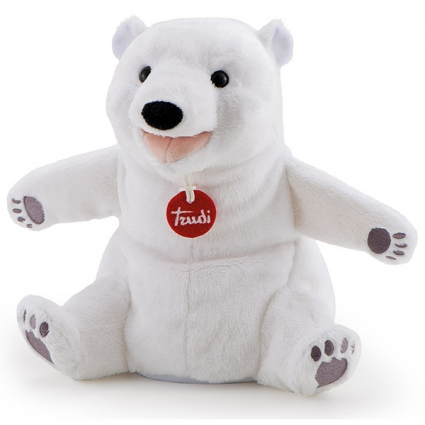

Мягкая игрушка на руку Белый мишка
, 25 см

Краткое описание товара
Мягкий гипоаллергенный мишка с Северного полюса. Веселый, любит играть и обниматься
Характеристика товара
- Возраст: от 3 лет
- Тип: мягкая игрушка
- Цвет: белый
- Высота игрушки, см: 25
- Материал: пластик, синтепон, текстиль, плюш
- Пол: для девочек, для мальчиков
- Упаковка: картонная коробка открытого типа
- Вид мягкой игрушки: медведь
| Характеристика | Описание |
| Страна производства | Китай |
| Уровень безопасности | Высший |
| Оценка покупателей | 8 из 10 |
Подробное описание товара
Игрушка на руку «Белый мишка» от итальянского производителя Trudi предназначена не только для обычной игры, но и для постановки детских спектаклей. Мишка выглядит очень забавно, поэтому сможет стать как приятным атрибутом игры, так и отличным персонажем любой тематической постановки.
Благодаря мягкой и ворсистой фактуре плюша, из которого изготовлена игрушка, мишка очень приятен на ощупь. Игра с ним сможет порадовать ребенка, который благодаря своей фантазии сможет обрести в лице медвежонка не просто атрибут для игр, а веселого, пусть и игрушечного, друга.